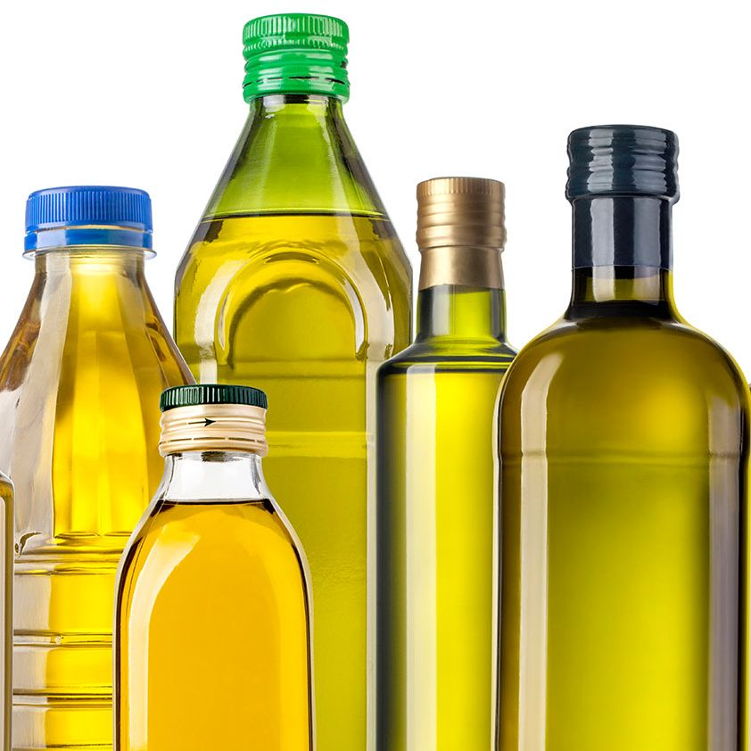
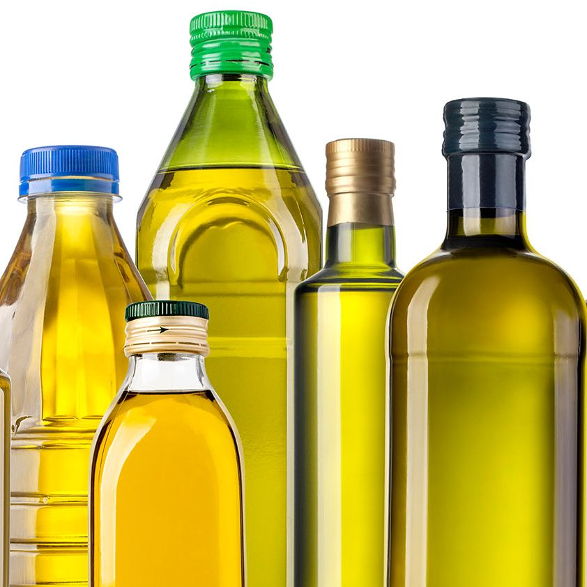
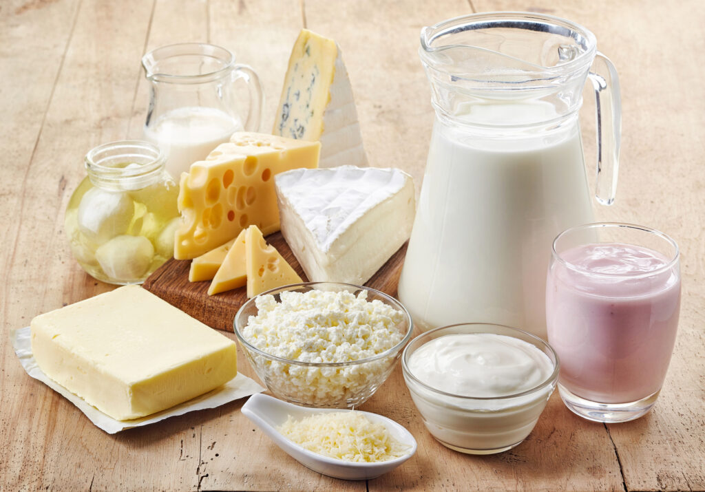
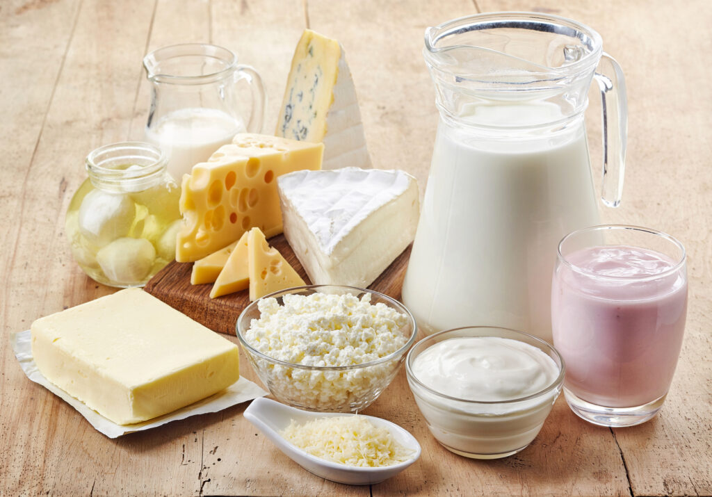
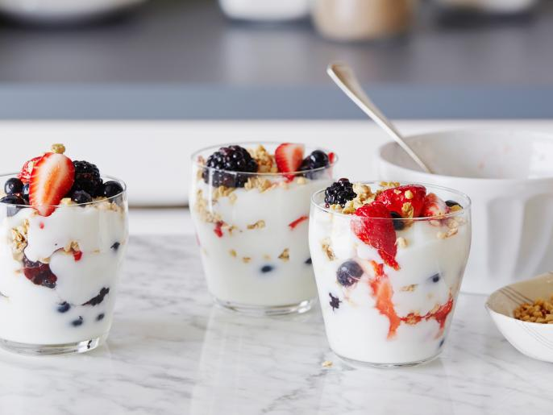
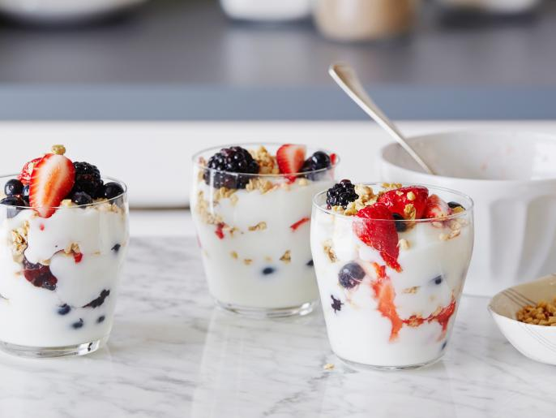
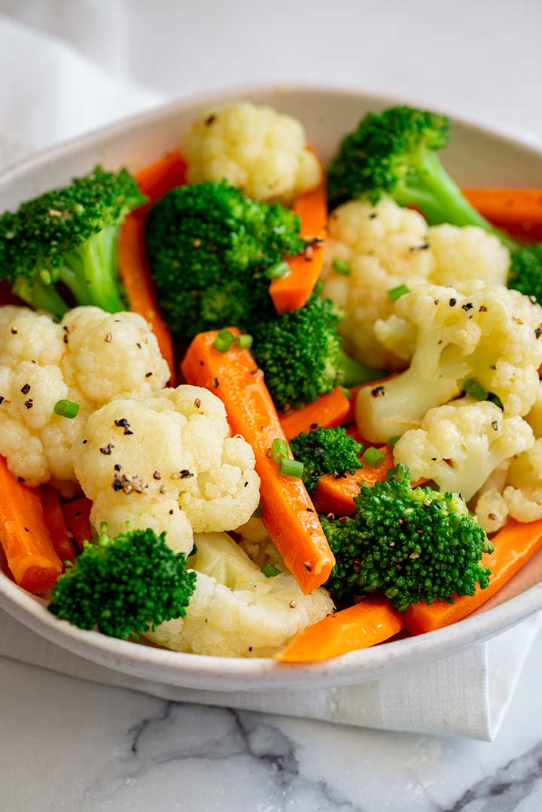
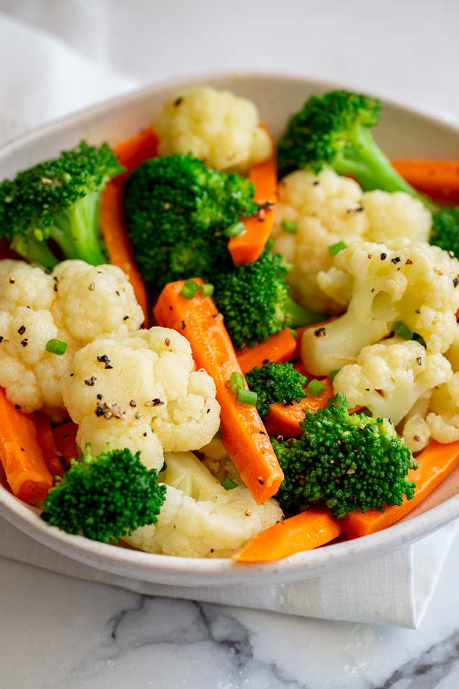

CARBOHYDRATES
Carbohydrates are the body's main source of energy. They are essential for the proper functioning of our organs and muscles.
Examples of carbohydrate-rich foods include:
- Bread
- Pasta
- Rice
- Eba
- Pounded Yam


Carbohydrates are the body's main source of energy. They are essential for the proper functioning of our organs and muscles.
Examples of carbohydrate-rich foods include:
Proteins are vital for building and repairing tissues. They also play a crucial role in the production of enzymes and hormones.
Examples of protein-rich foods include:


Fats are an essential part of our diet. They provide energy and help the body absorb vitamins.
Examples of foods rich in fats include:
:max_bytes(150000):strip_icc():format(webp)/how-to-store-nuts-0822-49580ae809c5400ea6cf7daccb4a4351.jpg) 

Vitamins are organic compounds that are crucial for normal growth and nutrition. They are required in small quantities in the diet.
Examples of vitamin-rich foods include:
 

Minerals are inorganic elements that are essential for the body. They play a vital role in bone formation, heart health, and more.
Examples of mineral-rich foods include:

 

Water is essential for life. It helps in maintaining the balance of bodily fluids, digestion, and more.
Examples of sources of water include:


Fibers are essential for digestive health. They help in maintaining bowel health and lowering cholesterol levels.
Examples of fiber-rich foods include:

 
